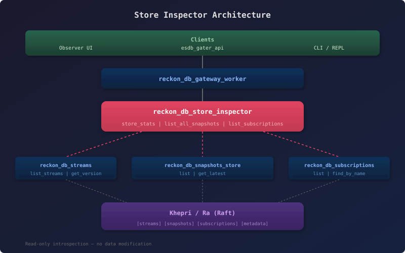

Store Inspector
View SourceThe Store Inspector provides aggregate introspection for debugging and monitoring ReckonDB stores. It answers questions like:
- How many streams and events does this store have?
- What event types are being used?
- Are subscriptions keeping up or falling behind?
- Which streams have snapshots?
Usage
All functions take a StoreId atom and return {ok, Data} or {error, Reason}.
Store Statistics
{ok, Stats} = reckon_db_store_inspector:store_stats(my_store).
%% #{store_id => my_store,
%% stream_count => 42,
%% total_events => 1337,
%% snapshot_count => 5,
%% subscription_count => 3,
%% has_events => true}List All Snapshots
Returns snapshot summaries across all streams, sorted newest first. Data payloads are not included (only metadata).
{ok, Snapshots} = reckon_db_store_inspector:list_all_snapshots(my_store).
%% [#{stream_id => <<"user-123">>, version => 50, timestamp => 1710000000000, metadata => #{}},
%% #{stream_id => <<"order-456">>, version => 20, timestamp => 1709000000000, metadata => #{}}]List Subscriptions
Returns all active subscriptions with their checkpoint positions.
{ok, Subs} = reckon_db_store_inspector:list_subscriptions(my_store).
%% [#{subscription_name => <<"prj_users">>,
%% type => event_type,
%% selector => <<"user_registered_v1">>,
%% checkpoint => 42,
%% pool_size => 1,
%% created_at => 1710000000000,
%% subscriber_pid => <<"<0.500.0>">>}]Subscription Lag
How far behind is a specific subscription?
{ok, Lag} = reckon_db_store_inspector:subscription_lag(my_store, <<"prj_users">>).
%% #{subscription_name => <<"prj_users">>,
%% checkpoint => 42,
%% latest_position => 100,
%% lag_events => 57}Event Type Summary
Census of which event types appear and how many of each. Can be expensive for large stores.
{ok, Types} = reckon_db_store_inspector:event_type_summary(my_store).
%% [#{event_type => <<"user_registered_v1">>, count => 500},
%% #{event_type => <<"user_promoted_v1">>, count => 50},
%% #{event_type => <<"user_archived_v1">>, count => 10}]Stream Info
Detailed information about a single stream, including snapshot coverage.
{ok, Info} = reckon_db_store_inspector:stream_info(my_store, <<"user-123">>).
%% #{stream_id => <<"user-123">>,
%% version => 50,
%% event_count => 51,
%% first_event_at => 1700000000000,
%% last_event_at => 1710000000000,
%% snapshots => #{count => 1, latest_version => 50}}Architecture

The inspector reads directly from the Khepri tree via existing facade modules (reckon_db_streams, reckon_db_snapshots_store, reckon_db_subscriptions_store). It never modifies data.
Gateway worker clauses route inspector requests through the standard reckon_gater_api dispatch chain, making these operations available to any client (including the Hecate Observer UI).
Performance Notes
store_stats/1— O(streams) — fast for typical stores (<1000 streams)list_all_snapshots/1— O(streams) — iterates all streams checking for snapshotslist_subscriptions/1— O(subscriptions) — typically very fast (<50 subscriptions)subscription_lag/2— O(streams) — needs total event countevent_type_summary/1— O(total events) — expensive for large stores, walks all eventsstream_info/2— O(1) — reads single stream metadata + first/last events